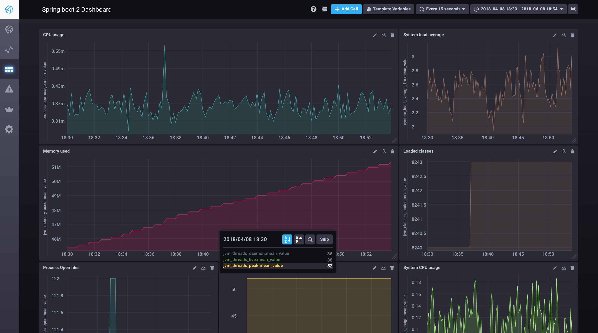

Spring boot metrics monitoring using TICK stack
Mohammed Aboullaite | 08 Apr 2018 | 6 min (1537 words)
原文地址 https://aboullaite.me/spring-boot-metrics-monitoring-using-tick-stack/
Worth nothing to mention that monitoring the performance and availability of applications is very important. This is one of the many cool features bundled with Spring boot, which since its first days comes with production ready features (i.e Actuator) to help us keeping an eye on apps performance. With the release of spring boot 2, Actuator got a huge boost, offering dev/ops more application metrics facade that supports numerous monitoring systems.
In this post, we'll see how we can easily monitor Spring boot applications using the TICK stack.
The TICK stack ?!
The TICK stack is a collection of products from the developers of the time-series database InfluxDB. It is made up of the following components:
- Telegraf: collects time-series data from a variety of sources.
- InfluxDB: stores time-series data.
- Chronograf: visualizes and graphs the time-series data.
- Kapacitor: provides alerting and detects anomalies in time-series data.
We can use each of these components separately, but if we use them together, we'll have a scalable, integrated open-source system for processing time-series data.
Configuring the TICK stack and spring boot
As I mentioned above, Spring Boot 2 actuator comes bundled with metrics facade easily integrated with many monitoring platforms including the Tick stack.
Configuring Spring Boot
First of all we need, obviously, to add spring boot actuator dependency to our application:
<dependency>
<groupId>org.springframework.boot</groupId>
<artifactId>spring-boot-starter-actuator</artifactId>
<version>${actuator.version}</version>
</dependency>
If you are using spring boot 2, Actuator autoconfigure micrometer magically. if not and you're using a previous version, please check these configuration steps.
On the other hand, Telegraf is an agent written in Go and accepts StatsD protocol metrics over UDP, then periodically forwards the metrics to InfluxDB. Micrometer supports three flavors of StatsD: the original Etsy format plus the Datadog and Telegraf extensions of StatsD that add dimensional support. Obviously we're going to use this registry to publish metrics to telegraf. For that we need to add these lines to our application.properties file:
management.metrics.export.statsd.enabled=true
management.metrics.export.statsd.flavor=telegraf
management.metrics.export.statsd.port=8125
Configuring the TICK stack
The docker-compose file below configures 4 services:
-
telegrafservice to collect data sent by micrometer. This service is configured using the./etc/telegraf.conffile. this service expose the port8125used by Actuator to send metrics -
influxdbservice that stores data sent from telegraf. we mount a volume to./data/influxdbto save data on host disk. It expose the port8086to access influxdb API. -
chronografservice to visualize influxdb data, create dashboards and show alerts triggered from kapacitor. this service expose port8888to access this web application. -
kapacitorservice, analyse influxdb data and triggers alerts.
version: '3'
services:
# Define a Telegraf service
telegraf:
image: telegraf:1.5.3
volumes:
- ./etc/telegraf.conf:/etc/telegraf/telegraf.conf:ro
links:
- influxdb
ports:
- "8125:8125/udp"
# Define an InfluxDB service
influxdb:
image: influxdb:1.5.1
volumes:
- ./data/influxdb:/var/lib/influxdb
ports:
- "8086:8086"
# Define a Chronograf service
chronograf:
image: chronograf:1.4.3.1
environment:
INFLUXDB_URL: http://influxdb:8086
KAPACITOR_URL: http://kapacitor:9092
ports:
- "8888:8888"
links:
- influxdb
- kapacitor
# Define a Kapacitor service
kapacitor:
image: kapacitor:1.4.1
environment:
KAPACITOR_HOSTNAME: kapacitor
KAPACITOR_INFLUXDB_0_URLS_0: http://influxdb:8086
links:
- influxdb
ports:
- "9092:9092"
The telegraf.conf file I've used is very minimalist. it configures the telegraf agent properties as well as StatsD as input plugin and influxdb as output plugin:
# Telegraf Configuration
# Global tags can be specified here in key="value" format.
[global_tags]
# Configuration for telegraf agent
[agent]
## Default data collection interval for all inputs
interval = "10s"
## Rounds collection interval to 'interval'
round_interval = true
## This controls the size of writes that Telegraf sends to output plugins.
metric_batch_size = 1000
## This buffer only fills when writes fail to output plugin(s).
metric_buffer_limit = 10000
## Collection jitter is used to jitter the collection by a random amount.
collection_jitter = "0s"
flush_interval = "10s"
flush_jitter = "0s"
precision = ""
## Logging configuration:
debug = false
## Run telegraf in quiet mode (error log messages only).
quiet = false
## Specify the log file name. The empty string means to log to stderr.
logfile = ""
## Override default hostname, if empty use os.Hostname()
hostname = ""
## If set to true, do no set the "host" tag in the telegraf agent.
omit_hostname = false
###############################################################################
# OUTPUT PLUGINS #
###############################################################################
# Configuration for influxdb server to send metrics to
[[outputs.influxdb]]
## The full HTTP or UDP URL for your InfluxDB instance.
urls = ["http://influxdb:8086"] # required
## The target database for metrics (telegraf will create it if not exists).
database = "telegraf" # required
## Name of existing retention policy to write to. Empty string writes to
## the default retention policy.
retention_policy = ""
## Write consistency (clusters only), can be: "any", "one", "quorum", "all"
write_consistency = "any"
## Write timeout (for the InfluxDB client), formatted as a string.
timeout = "5s"
###############################################################################
# INPUT PLUGINS #
###############################################################################
# # Statsd UDP/TCP Server
[[inputs.statsd]]
# ## Protocol, must be "tcp", "udp", "udp4" or "udp6" (default=udp)
protocol = "udp"
#
# ## MaxTCPConnection - applicable when protocol is set to tcp (default=250)
max_tcp_connections = 250
#
# ## Address and port to host UDP listener on
service_address = ":8125"
#
# ## The following configuration options control when telegraf clears it's cache
# ## of previous values. If set to false, then telegraf will only clear it's
# ## cache when the daemon is restarted.
# ## Reset gauges every interval (default=true)
delete_gauges = true
# ## Reset counters every interval (default=true)
delete_counters = true
# ## Reset sets every interval (default=true)
delete_sets = true
# ## Reset timings & histograms every interval (default=true)
delete_timings = true
#
# ## Percentiles to calculate for timing & histogram stats
percentiles = [90]
#
# ## separator to use between elements of a statsd metric
metric_separator = "_"
#
# ## Parses tags in the datadog statsd format
# ## http://docs.datadoghq.com/guides/dogstatsd/
parse_data_dog_tags = false
# ## Number of UDP messages allowed to queue up, once filled,
# ## the statsd server will start dropping packets
allowed_pending_messages = 10000
#
# ## Number of timing/histogram values to track per-measurement in the
# ## calculation of percentiles. Raising this limit increases the accuracy
# ## of percentiles but also increases the memory usage and cpu time.
percentile_limit = 1000
Show me the graphs
If everything is good, you should see metrics stored in influxdb from the chronograf application. The UX is so fluent and lean. After 5 min only I was able to build this very simple dashboard:

Yaaay visibility!
Configuring alerts
One of the great features of the TICK stack is the alerting and detecting anomalies in the data. It support many alert endpoints(TCP, HipChat, Slack, SMTP, Talk, log, Telegram ...). The configuration of Kapacitor from chronograf is very easy and straightforward. I've set up a Memory usage alert in a matter of seconds. (Well, it's a very basic alert! configuring real world, complexe alerts will need more time obviously ;))
The official documentation explains the required step to create your first alert!
Securing Chronograf
The community edition of the TICK stack does not ship with security by default. To secure Chronograf we can put it behind a web server and configure Basic authentication. The second option, which I prefer, would be to use keycloak proxy as I explained previously in this post!
Ressources
Copyright © 2015 Powered by MWeb, Theme used GitHub CSS.